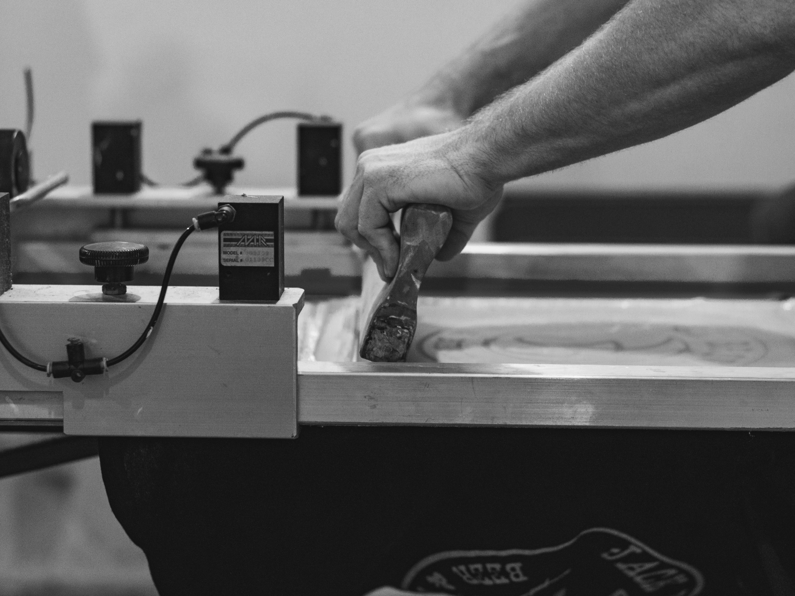

01
Mockups & Approvals
Every concept visualized on the garment before a single print runs. Sign-off baked into the workflow.

Lots of companies print ink on shirts. Production is everything that happens before and after that process. Mockups, approvals, communication, timelines, consistency, and execution all work together to create a retail-quality final product.
From the first proof to the final delivery, every detail matters when apparel represents for you or your organization.
Every concept visualized on the garment before a single print runs. Sign-off baked into the workflow.
You hear from a human, on time, every step. No vendor-portal silence, no chasing for status updates.
Production schedules built around your deadline — and protected through every step on the floor.
Run-to-run, order-to-order, the standard holds. The apparel always lands at retail quality.
Nuclear builds apparel through three core production methods: screen printing, embroidery, and direct-to-film. Each process serves a different purpose depending on the garment, artwork, quantity, and overall look you're trying to achieve.
 01 — The Foundation
01 — The Foundation
Screen printing is the foundation of modern apparel production and remains the industry standard for retail-quality merchandise, team apparel, uniforms, and large-scale orders.
Built for durability, consistency, and visual impact, it's the go-to production method for organizations and people that want apparel to look professional, cohesive, and built to last.
 02 — The Premium Standard
02 — The Premium Standard
Embroidery is the premium standard for polished, professional apparel.
From corporate uniforms and hospitality programs to retail merchandise and branded outerwear, embroidery adds texture, durability, and elevated presentation that instantly separates apparel from standard printed goods.
 03 — The Versatile
03 — The Versatile
Direct-to-film gives apparel production the flexibility to handle detailed artwork, full-color graphics, smaller runs, and fast-turnaround projects without sacrificing visual quality.
It's a modern production method built for versatility, allowing brands, organizations, and events to produce clean professional apparel with speed and consistency.